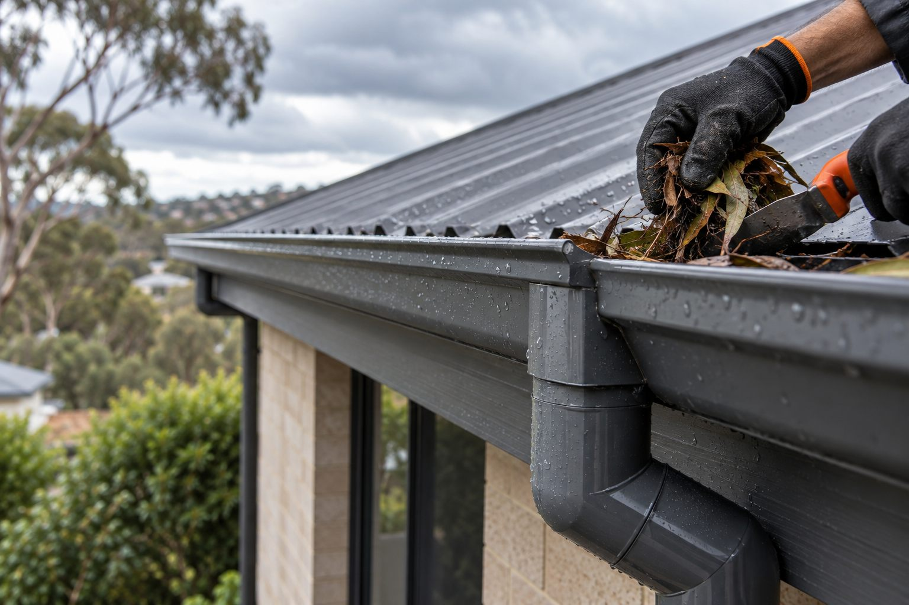

Roof leak investigation
We trace the reported water pattern, roof details and drainage context to identify the entry path and define the repair work.
Explore roof leak repairs ↗
Service areas / Adelaide CBD
Need roof leak help near Pirie Street? Ellis Services Group assesses the roof on site, identifies the cause and confirms the repair plan and written quote.
Local roof repair support
For homes, apartments and commercial properties in Adelaide CBD, Ellis Services Group plans roof repairs around safe access, building conditions and practical work sequencing. Our Adelaide CBD service area includes Pirie Street, King William Street, Gouger Street and Wakefield Street.
Our local emphasis is city-access planning, heritage-sensitive roof details and clear work staging. The on-site assessment confirms which of these items need work at your property.
What we can help with
We trace the reported water pattern, roof details and drainage context to identify the entry path and define the repair work.
Explore roof leak repairs ↗Ellis repairs visible tile, ridge, flashing and roof-edge defects with a scope matched to the damage identified on your roof.
Explore tile, ridge and flashing repairs ↗We assess whether the roof needs focused repairs or a broader restoration scope, including preparation and any suitable finish.
Explore roof restoration ↗Ellis checks gutters, outlets and downpipes whenever leaves, overflow or roof-edge drainage affect the roof system.
Gutter & downpipe repairs ↗Roads in this area
Select your nearest road to include its name in your enquiry and help Ellis locate the property. You can also request a quote using the form below.
Prepare your enquiry
Give your Adelaide CBD address and road or closest cross street, such as Pirie Street if it matches your location.
For a water mark or drip, describe where it appears inside and whether it follows rain. Mention any building-entry or shared-access arrangements that affect an assessment.
Describe only what you can see from ground level; do not climb onto the roof. Include the roof material if known and any access constraints, such as restricted entry or shared access.
Assessment and next steps
Roof leak investigation and repair scope explains the service scope. For background before you enquire, see How roof leak investigation works.
Send these details with your quote enquiry. An on-site assessment confirms the roof condition, access and proposed work before the written quote.
Read About Ellis and the business assessment process, check the written warranty coverage, duration and exclusions, or view the existing Adelaide service areas.
Common questions
Yes. We inspect the roof coverings, flashing and drainage on site, trace the water-entry path and provide the leak repair plan and written quote.
Yes. We inspect CBD roofs and provide restoration work where the roof condition supports repair and preparation. Our written quote identifies the repairs and suitable finishing system, rather than assuming every roof needs restoration.
Tell us the property type, closest cross street, what you have noticed and whether recent weather changed the problem.